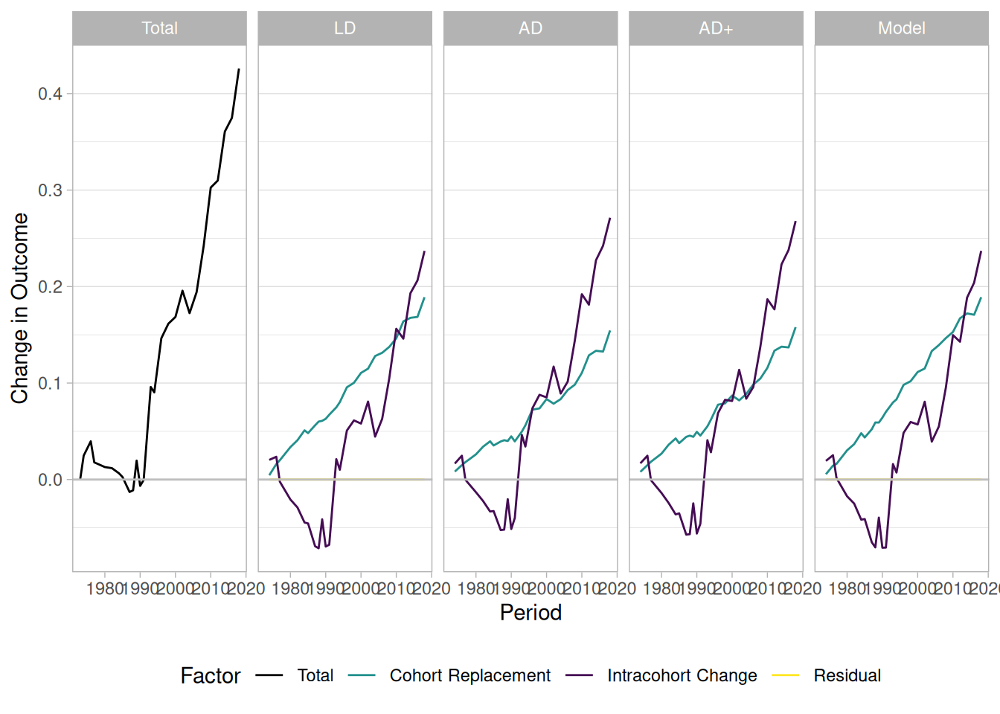

library("socialchange")
library("modelsummary")
library("ggplot2")
data(gss_homosex)Decomposing General Social Survey data: Attitudes on Homosexuality
The package includes a dataset gss_homosex, covering General Social Survey data on attitudes towards homosexuality in the U.S. This data was also analyzed in Ekstam (2021).
Packages
Descriptives
# compare to Table 1 in Ekstam -- roughly similar
modelsummary::datasummary(
homosex + year + cohort + age + educ + sex + race ~ mean + SD + min + max,
data = gss_homosex, output = "markdown", fmt = 3)| mean | SD | min | max | |
|---|---|---|---|---|
| homosexual sex relations | 0.326 | 0.440 | 0.000 | 1.000 |
| gss year for this respondent | 1994.723 | 13.498 | 1973.000 | 2018.000 |
| cohort | 1948.626 | 21.067 | 1892.000 | 1995.000 |
| age of respondent | 46.097 | 17.496 | 18.000 | 89.000 |
| highest year of school completed | 12.875 | 3.171 | 0.000 | 20.000 |
| respondents sex | 1.553 | 0.497 | 1.000 | 2.000 |
| race of respondent | 1.237 | 0.538 | 1.000 | 3.000 |
by_year <- gss_homosex[, list(y = weighted.mean(homosex, wtssall)), by = c("year")]
ggplot(by_year, aes(x = year, y = y)) + geom_line() + ylim(0, 1) + theme_light()
IC-CR decomposition
The cr_ic() function implements four methods for separating intracohort change (IC) from cohort replacement (CR): algebraic decomposition (AD), linear decomposition (LD), and two model-based improvements (AD+ and Model). For a detailed explanation of each method, including a replication of Firebaugh (1989), see the Replications: Firebaugh vignette.
# complete period
form <- homosex ~ as.factor(year) + as.factor(cohort)
(res <- cr_ic(gss_homosex, homosex ~ year + cohort, weight = "wtssall", model = form))
#> Cohort decomposition (year-over-year) with 27 periods:
#> 1973, 1974, 1976, 1977, 1980, 1982, 1984, 1985, 1987, 1988, 1989, 1990, 1991, 1993, 1994, 1996, 1998, 2000, 2002, 2004, 2006, 2008, 2010, 2012, 2014, 2016, 2018
#>
#> Summary for entire period:
#> 1973 2018 Difference
#> <num> <num> <num>
#> 0.1893911 0.6152818 0.4258907
#>
#> Decompositions:
#> method factor value %
#> <char> <char> <num> <num>
#> LD total 0.4258907 100.00000
#> LD IC 0.2369375 55.63340
#> LD CR 0.1889532 44.36660
#> LD resid 0.0000000 NA
#> AD total 0.4258907 100.00000
#> AD IC 0.2713559 63.71491
#> AD CR 0.1545348 36.28509
#> AD resid 0.0000000 NA
#> AD+ total 0.4258907 100.00000
#> AD+ IC 0.2679414 62.91318
#> AD+ CR 0.1579493 37.08682
#> AD+ resid 0.0000000 NA
#> Model total 0.4258907 100.00000
#> Model IC 0.2369396 55.63391
#> Model CR 0.1889511 44.36609
#> Model resid 0.0000000 NA
plot(res)
# only beginning and end year (also compare to Baunach 2011)
form <- homosex ~ as.factor(year) + splines::bs(cohort, 10)
(res <- cr_ic(gss_homosex[year %in% c(min(year), max(year))], homosex ~ year + cohort, weight = "wtssall", model = form))
#> Cohort decomposition (year-over-year) with 2 periods:
#> 1973, 2018
#>
#> Summary for entire period:
#> 1973 2018 Difference
#> <num> <num> <num>
#> 0.1893911 0.6152818 0.4258907
#>
#> Decompositions:
#> method factor value %
#> <char> <char> <num> <num>
#> LD total 0.4258907 100.00000
#> LD IC 0.1978149 46.44734
#> LD CR 0.2280758 53.55266
#> LD resid 0.0000000 NA
#> AD total 0.4258907 100.00000
#> AD IC 0.0605946 14.22775
#> AD CR 0.3652961 85.77226
#> AD resid 0.0000000 NA
#> AD+ total 0.4258907 100.00000
#> AD+ IC 0.1852284 43.49201
#> AD+ CR 0.2406623 56.50799
#> AD+ resid 0.0000000 NA
#> Model total 0.4258907 100.00000
#> Model IC 0.1967017 46.18597
#> Model CR 0.2291890 53.81403
#> Model resid 0.0000000 NAFor APC analysis of the same gss_homosex dataset, see the APC vignette.